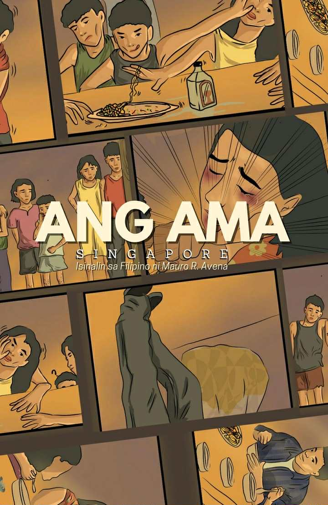
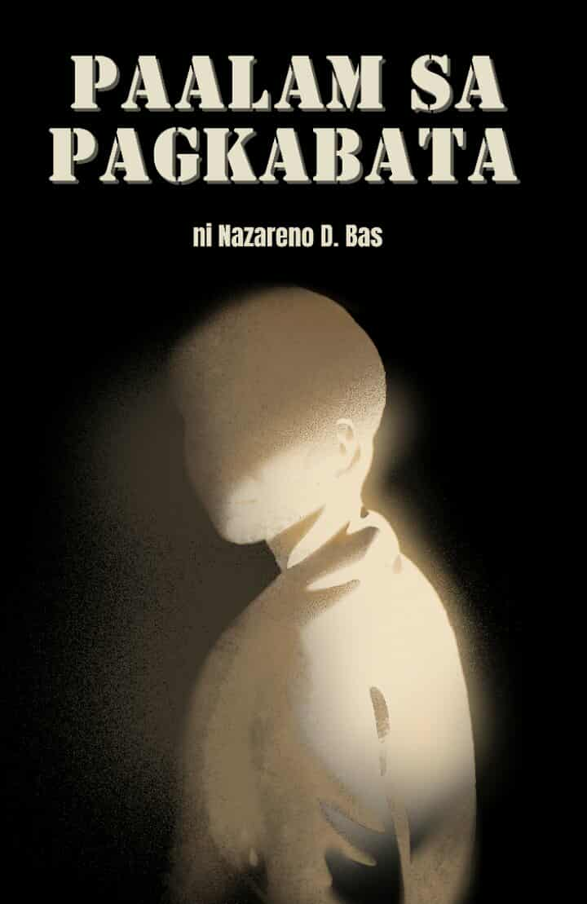
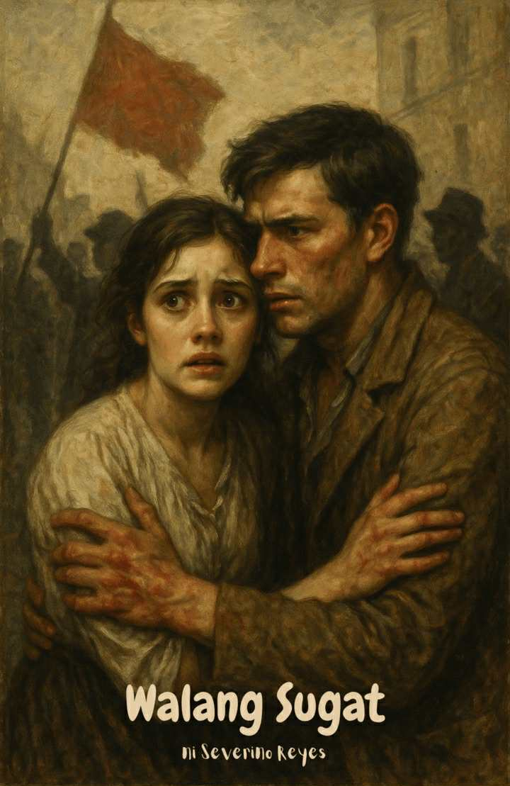
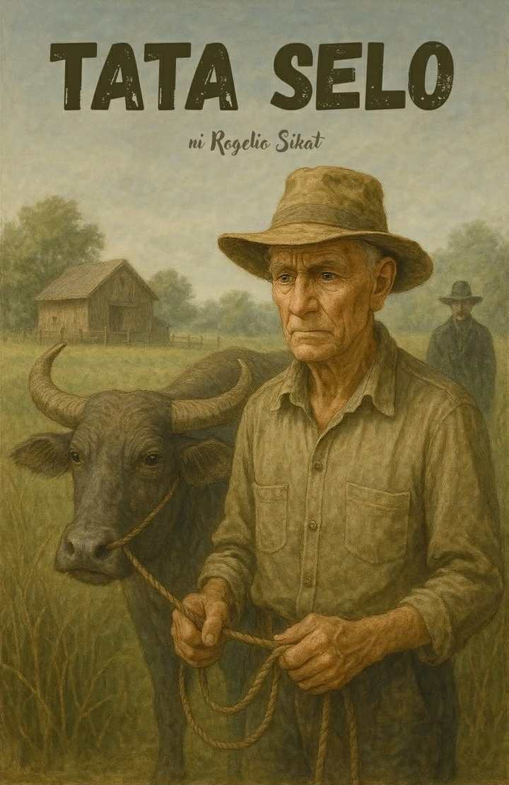

AKLAT-TURO
Ang Aklat-Turo ay isang interaktibong plataporma ng mga piling maiikling kwento at kaugnay na gawain. Layunin nitong pasiglahin ang pag-unawa at pagmamahal sa panitikang Pilipino sa pamamagitan ng aktibong pagbasa at malalim na pagsusuri. Dito, bawat kwento’y nagbibigay-aral, at bawat gawain ay gabay sa pagkatuto. Halina’t tuklasin ang yaman ng mga akda!
basahin natinMga Maikling Kwento

Paalam sa Pagkabata
Paalam sa Pagkabata

Walang Sugat
Walang Sugat
Miliminas: Taong 0069
Miliminas: Taong 0069
